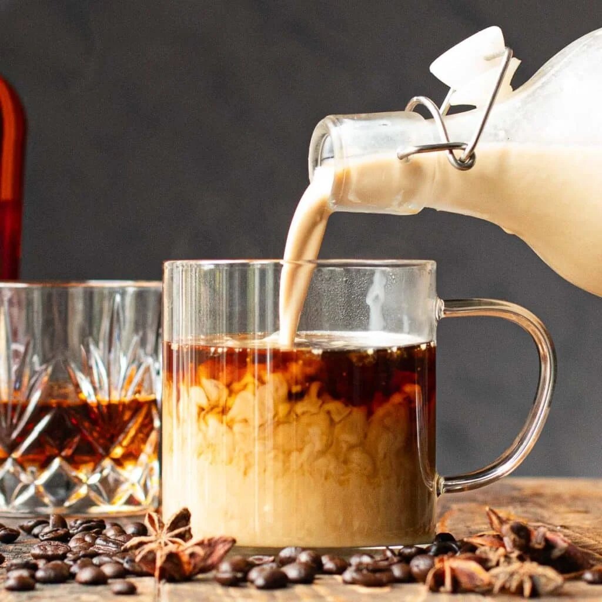

Bourbon Cream

Ingredients
- Bourbon (50% ABV): 1 cup
- Sweetened Condensed Milk: 300 ml (1 can)
- Table Cream: 400 ml
- Vanilla Extract: 1–2 tsp (optional, for flavor)
- Instant Coffee or Cocoa Powder: 2 tsp (optional, for depth of flavor and color)
Description
- Add all ingredients to the blender and gently blend for a few minutes.
- Pour into a container and let it rest in the fridge for a few hours before serving, it should be a little thicker after cooling.
Home